🎉 Benvenuti nel sito del mio compleanno! 🎂🎁
Ciao a tutti e benvenuti! 🎈 Questo non è un sito qualsiasi... qui dovrete mettere alla prova la
vostra logica e il
vostro ingegno per scoprire le liste e le sorprese che ho preparato per voi.
Avventurandovi tra le prove, vi troverete a gestire risorse preziose, a esplorare terre inesplorate
e a costruire
percorsi ingegnosi. Solo chi saprà ottimizzare al meglio le proprie mosse potrà arrivare fino in
fondo!
🔑 Come funziona?
Per sbloccare i contenuti nascosti, dovrete risolvere dei puzzle matematici che vi
forniranno delle
chiavi di 4 lettere.
Ogni chiave corrisponde a una riga della tabella qui sotto: trovandola e inserendola nel punto
giusto, potrete
proseguire nel vostro viaggio.
Che siate esploratori in cerca di antiche rovine, costruttori di imponenti dighe o avventurieri
nello spazio
profondo, qui ci sarà sempre una sfida ad attendervi!
🧩 Dove trovare i puzzle?
Per giocare a un puzzle cliccate un gioco sulla navbar. Nelle pagine troverete le regole e le
istruzioni: sarà come
gestire la produzione di una frenetica catena di montaggio o ottimizzare il flusso di risorse in un
delicato
equilibrio strategico.
Attenzione però! A volte il tempo stringe e il caos regna sovrano... riuscirete a mantenere il
sangue freddo?
🎯 Obiettivo
Riuscirete a sbloccare tutte le liste? Solo i più veloci e brillanti potranno scoprire tutti i
segreti!
Forse vi ritroverete a navigare tra galassie sconosciute o a fare scelte difficili per sopravvivere
nella giungla...
ma niente paura, con la giusta strategia tutto è possibile!
Buon divertimento e... che la matematica sia con voi! 🚀
| Gioco |
A |
B |
C |
D |
E |
| Prima |
puzzle1 |
puzzle1 |
puzzle1 |
puzzle1 |
____ |
| Seconda |
____ |
puzzle2 |
puzzle2 |
puzzle2 |
puzzle1 |
| Terza |
puzzle2 |
____ |
puzzle3 |
puzzle3 |
puzzle2 |
| Quarta |
puzzle3 |
puzzle3 |
____ |
puzzle4 |
puzzle3 |
| Quinta |
puzzle4 |
puzzle4 |
puzzle4 |
____ |
puzzle4 |
Il segreto più oscuro
Esiste una parola più segreta delle altre, nascosta tra i puzzle. Per scoprirla, devi risolvere i
seguenti indizi e
ottenere le parole corrispondenti dalla tabella.
Una volta trovate, prendi la prima lettera di ciascuna parola e inseriscila nella pagina.
**Indizi da risolvere:**
B1 D4 B4 E5 - A3 D1 B2 C3 - D2 C1 B5 - E2
High rank
Ho suddiviso i giochi in scatola in tre categorie per raggiungere la tripla cifra:
High, Mid
e Low,
ciascuna basata su criteri specifici. Queste liste sono dinamiche: un gioco può spostarsi tra
categorie adiacenti in
base agli stessi criteri. Tuttavia, se un gioco scende di livello ed è già nella categoria
Low, può
essere rimosso dalla lista. Inoltre, i tre migliori giochi di ogni categoria sono evidenziati con
una stellina
accanto al nome⭐. Utilizzate il link qui sotto per cercare i giochi:
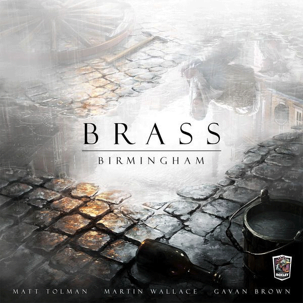
Brass: Birmingham è un gioco di strategia economica ambientato
durante
la rivoluzione
industriale.
I giocatori devono costruire un motore economico sfruttando carbone, ferro e birra
per
sviluppare
industrie e connessioni commerciali.
Il gioco richiede pianificazione a lungo termine e una forte gestione delle risorse.
Genere: Strategia, Economico
Numero di giocatori: 2-4
Tempo di gioco: 60-120 minuti
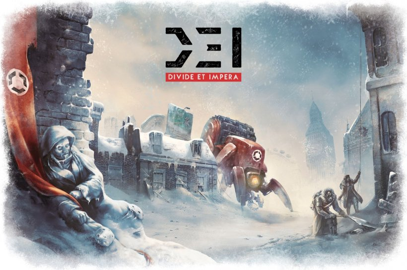
DEI - Dividi et Impera è un gioco di strategia e controllo del
territorio ambientato in
un futuro post-apocalittico.
I giocatori guidano diverse fazioni che competono per le risorse in un mondo
devastato.
La gestione
dell'economia e il controllo delle aree sono fondamentali per vincere.
Genere: Strategia, Controllo del territorio
Numero di giocatori: 2-4
Tempo di gioco: 90-120 minuti
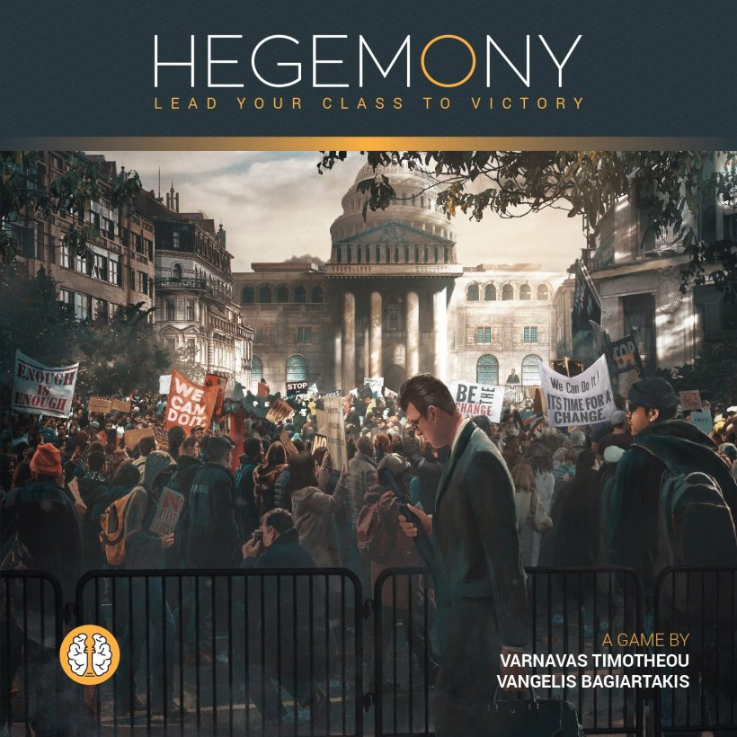
⭐Hegemony è un gioco asimmetrico in cui i giocatori assumono ruoli
politici e sociali,
come la classe lavoratrice, la borghesia o il governo.
Ogni fazione ha obiettivi e meccaniche diverse, creando un'esperienza profonda e
altamente strategica.
Genere: Politico, Asimmetrico
Numero di giocatori: 2-4
Tempo di gioco: 120-180 minuti
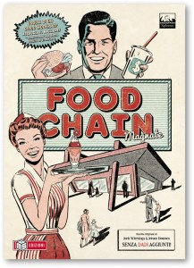
⭐ Food Chain Magnate è un gioco di strategia in cui i giocatori
gestiscono una catena di
ristoranti, competendo per attrarre clienti.
È caratterizzato da una forte componente economica e un sistema di gestione delle
risorse molto
approfondito.
Genere: Strategia, Economico
Numero di giocatori: 2-5
Tempo di gioco: 120-180 minuti
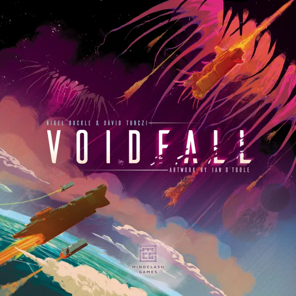
Voidfall è un gioco di strategia spaziale in cui i giocatori
controllano civiltà
galattiche in lotta per il dominio.
Combina meccaniche di 4X con una forte enfasi sulla gestione delle risorse e la
strategia a lungo
termine.
Genere: Strategia, 4X
Numero di giocatori: 1-4
Tempo di gioco: 120-240 minuti
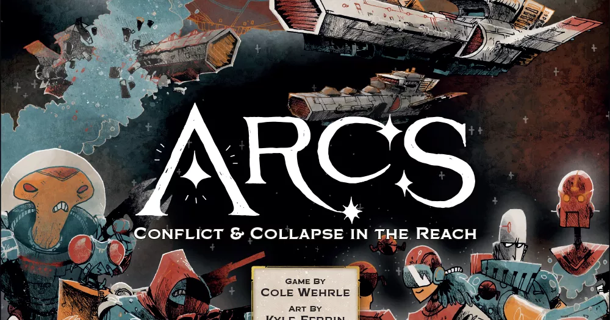
Arcs è un gioco di strategia spaziale con un forte focus narrativo.
I
giocatori
assumono il ruolo di fazioni in lotta per il potere, con eventi che cambiano
dinamicamente il corso
della partita.
Genere: Strategia, Narrativo
Numero di giocatori: 2-4
Tempo di gioco: 60-120 minuti
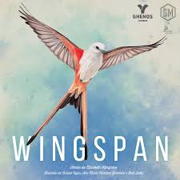
⭐Wingspan è un gioco da tavolo competitivo in cui i giocatori
assumono
il ruolo di
appassionati di ornitologia e cercano di attirare gli uccelli migliori nelle loro
riserve naturali.
Il gioco presenta meccaniche di engine-building e una forte componente educativa
sulla
fauna avicola.
Genere: Engine-building, Strategia
Numero di giocatori: 1-5
Tempo di gioco: 40-70 minuti
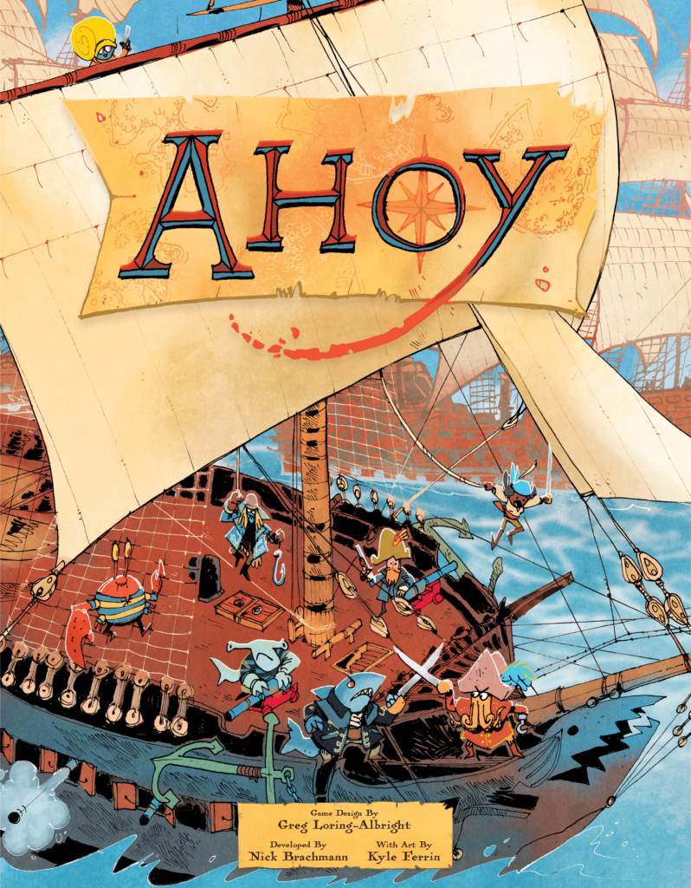
Ahoy è un gioco asimmetrico in cui i giocatori assumono il ruolo di
pirati e
pattugliatori navali in cerca di gloria e tesori.
Ogni fazione ha meccaniche e obiettivi unici, creando un'esperienza di gioco varia e
rigiocabile.
Genere: Asimmetrico, Avventura
Numero di giocatori: 2-4
Tempo di gioco: 45-75 minuti
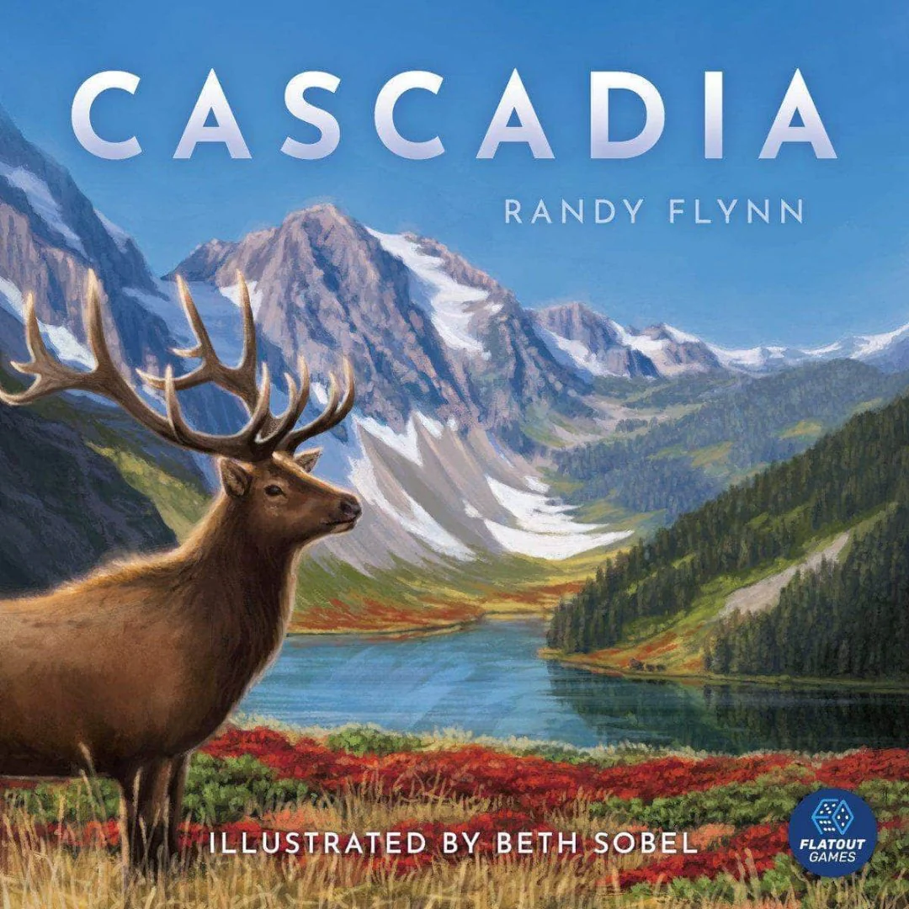
Cascadia è un gioco di piazzamento tessere e pattern-building in
cui i
giocatori creano
un ecosistema bilanciato con animali e habitat.
Ogni scelta strategica influisce sulla creazione di combinazioni vincenti.
Genere: Piazzamento tessere, Strategia
Numero di giocatori: 1-4
Tempo di gioco: 30-45 minuti
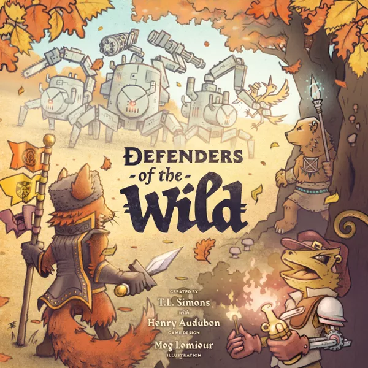
Defender of the Wild è un gioco di strategia e avventura in cui i
giocatori
interpretano guardiani della natura che devono proteggere l'ambiente da minacce
esterne.
Il gioco combina meccaniche di gestione risorse con narrazione immersiva.
Genere: Strategia, Narrativo
Numero di giocatori: 1-4
Tempo di gioco: 60-90 minuti
Mid rank
Ho suddiviso i giochi in scatola in tre categorie per raggiungere la tripla cifra:
High, Mid
e Low,
ciascuna basata su criteri specifici. Queste liste sono dinamiche: un gioco può spostarsi tra
categorie adiacenti in
base agli stessi criteri. Tuttavia, se un gioco scende di livello ed è già nella categoria
Low, può
essere rimosso dalla lista. Inoltre, i tre migliori giochi di ogni categoria sono evidenziati con
una stellina
accanto al nome⭐. Utilizzate il link qui sotto per cercare i giochi:
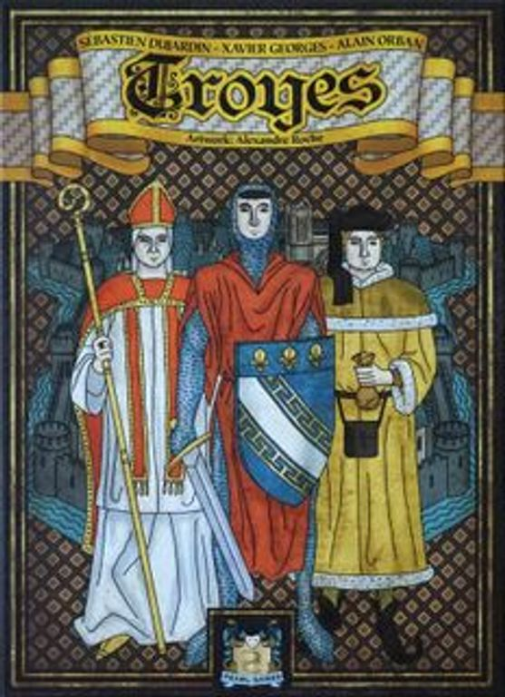
⭐Troyes è un gioco di piazzamento dadi e gestione risorse
ambientato
nel
Medioevo. I
giocatori assumono il ruolo di influenti famiglie della città di Troyes e competono
per
il controllo
delle aree chiave, sfruttando il lavoro dei cittadini e gestendo eventi storici.
Genere: Strategia, Gestione dadi
Numero di giocatori: 2-4
Tempo di gioco: 90 minuti
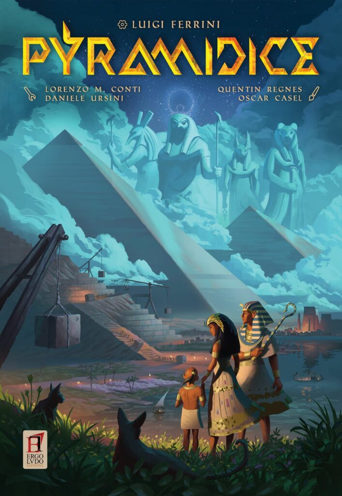
Piramydice è un gioco di dadi e gestione risorse ambientato
nell'Antico
Egitto. I
giocatori costruiscono piramidi e sviluppano la loro civiltà attraverso il
posizionamento strategico dei
dadi e la raccolta di risorse.
Genere: Dadi, Strategia
Numero di giocatori: 1-4
Tempo di gioco: 45-60 minuti
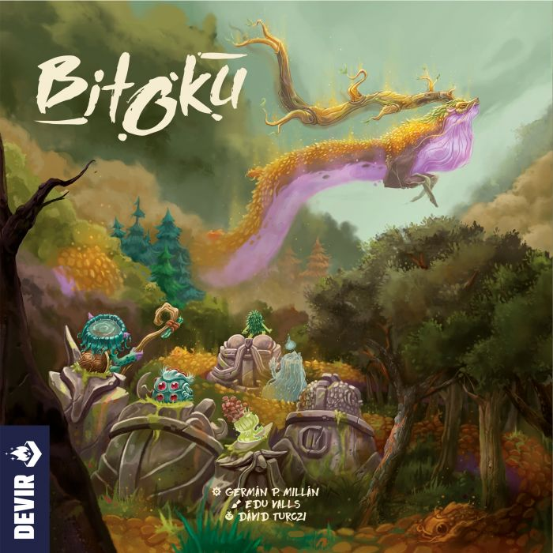
Bitoku è un gioco strategico ambientato in un mondo ispirato alla
mitologia giapponese.
I giocatori assumono il ruolo di spiriti guardiani che cercano di ascendere e
diventare
grandi
protettori della foresta, utilizzando carte, dadi e posizionamento lavoratori.
Genere: Gestione risorse, Strategia
Numero di giocatori: 1-4
Tempo di gioco: 90-120 minuti
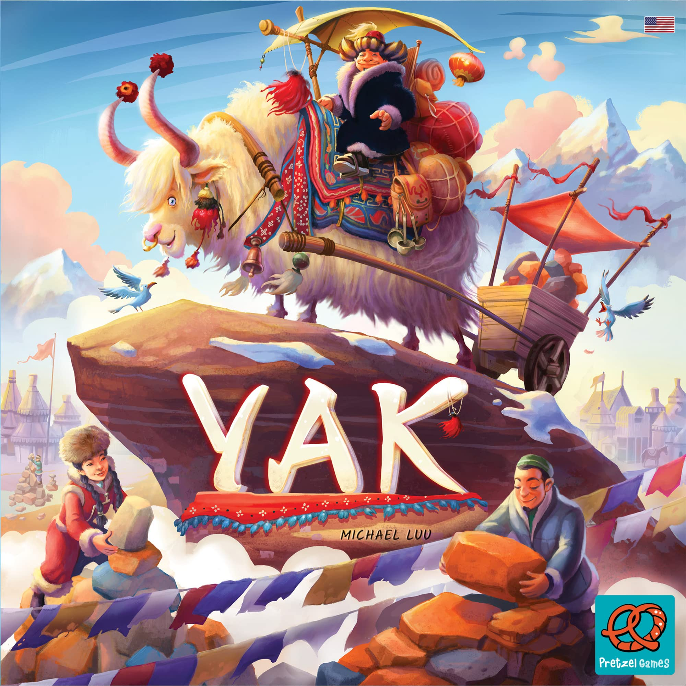
Yak è un gioco di costruzione e gestione risorse in cui i giocatori
devono ottenere
materiali trasportati da carovane di yak per costruire torri di pietra nel
villaggio.
Genere: Piazzamento risorse, Strategia
Numero di giocatori: 2-4
Tempo di gioco: 30-45 minuti
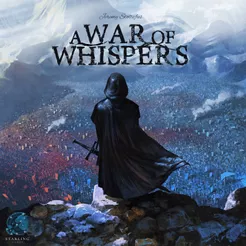
⭐War of Whispers è un gioco di strategia e intrighi in cui i
giocatori
non controllano
direttamente un esercito, ma influenzano in segreto le grandi fazioni in guerra per
ottenere il potere.
Genere: Strategia, Intrigo
Numero di giocatori: 2-4
Tempo di gioco: 60-90 minuti
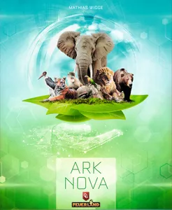
Ark Nova è un gioco di gestione in cui i giocatori costruiscono e
sviluppano uno zoo
moderno con l'obiettivo di bilanciare la conservazione della fauna con il successo
economico.
Genere: Gestione risorse, Strategia
Numero di giocatori: 1-4
Tempo di gioco: 90-150 minuti
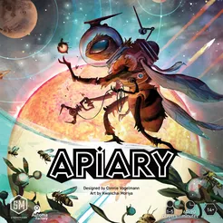
Apiary è un gioco di strategia e gestione risorse in cui i
giocatori
controllano
colonie di api intergalattiche che devono espandere i loro alveari e raccogliere
risorse
per
sopravvivere.
Genere: Gestione risorse, Fantascienza
Numero di giocatori: 1-5
Tempo di gioco: 60-90 minuti
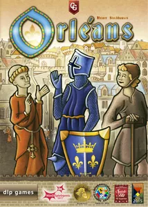
Orleans è un gioco di costruzione del mazzo e gestione lavoratori
ambientato nella
Francia medievale, dove i giocatori competono per sviluppare la loro città e
commerciare
risorse.
Genere: Strategia, Piazzamento lavoratori
Numero di giocatori: 2-4
Tempo di gioco: 90 minuti
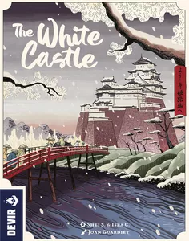
White Castle è un gioco di piazzamento lavoratori ambientato in
Giappone, dove i
giocatori devono gestire le proprie risorse per ottenere prestigio e influenza
presso il
castello
Himeji.
Genere: Strategia, Piazzamento lavoratori
Numero di giocatori: 1-4
Tempo di gioco: 60-90 minuti
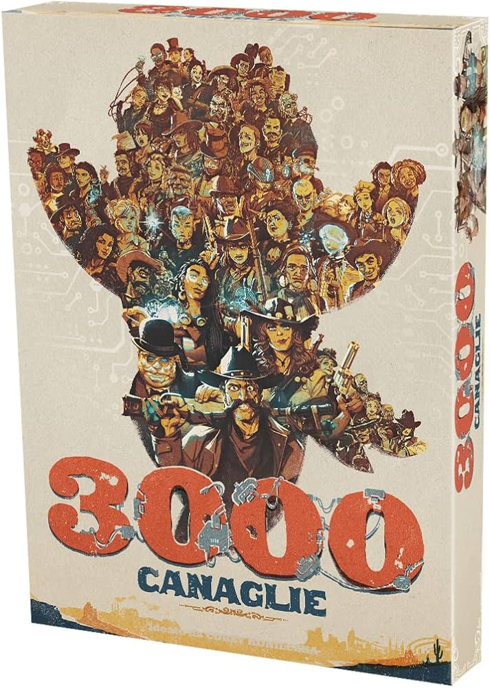
⭐3000 Canaglie è un gioco di carte e gestione risorse con
un’ambientazione futuristica e
cyberpunk. I giocatori reclutano personaggi unici con abilità speciali per ottenere
vantaggi strategici.
Genere: Strategia, Deck-building
Numero di giocatori: 2-4
Tempo di gioco: 60 minuti
Low rank
Ho suddiviso i giochi in scatola in tre categorie per raggiungere la tripla cifra:
High, Mid
e Low,
ciascuna basata su criteri specifici. Queste liste sono dinamiche: un gioco può spostarsi tra
categorie adiacenti in
base agli stessi criteri. Tuttavia, se un gioco scende di livello ed è già nella categoria
Low, può
essere rimosso dalla lista. Inoltre, i tre migliori giochi di ogni categoria sono evidenziati con
una stellina
accanto al nome⭐. Utilizzate il link qui sotto per cercare i giochi:
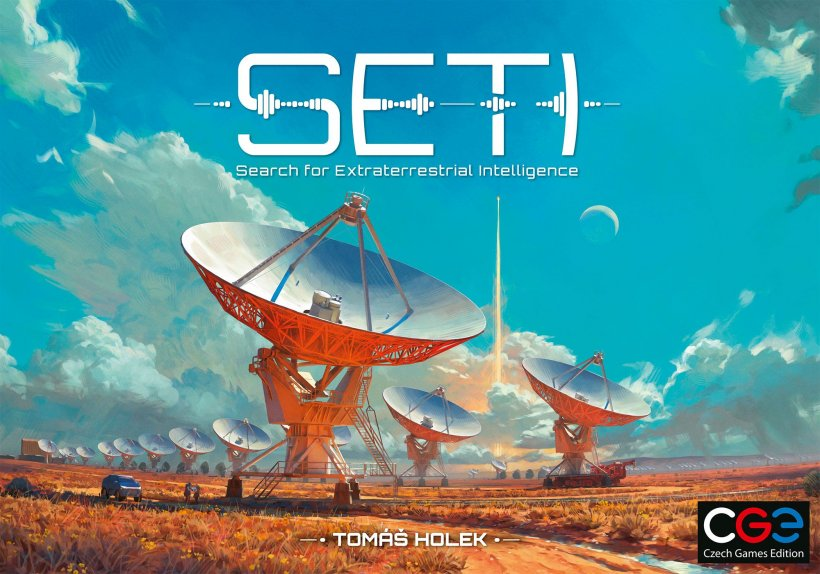
Seti è un gioco di strategia e esplorazione in cui i giocatori
cercano di
decifrare segnali dallo spazio, bilanciando risorse e avanzando nella ricerca
scientifica.
Genere: Strategia, Esplorazione
Numero di giocatori: 2-4
Tempo di gioco: 60-90 minuti
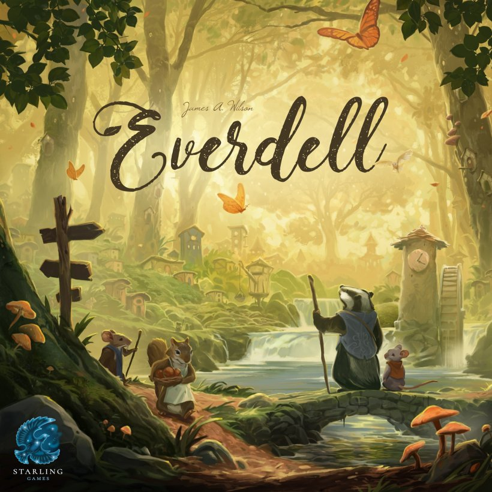
Everdell è un gioco di piazzamento lavoratori ambientato in un
mondo
fiabesco, in cui i giocatori costruiscono e sviluppano la propria città nel
cuore
della foresta.
Genere: Piazzamento lavoratori, Gestione risorse
Numero di giocatori: 1-4
Tempo di gioco: 40-80 minuti
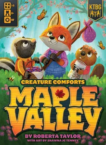
Maple Valley è un gioco di avventura e gestione, in cui i
giocatori
guidano
piccoli animali della foresta nella preparazione di una grande celebrazione
comunitaria.
Genere: Avventura, Family Game
Numero di giocatori: 2-4
Tempo di gioco: 45-75 minuti
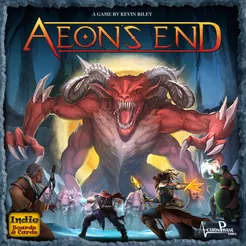
⭐Aeon's End è un deck-building cooperativo in cui i giocatori
sono
maghi che
combattono potenti nemici per difendere la loro città dall'invasione.
Genere: Deck-building, Cooperativo
Numero di giocatori: 1-4
Tempo di gioco: 60 minuti
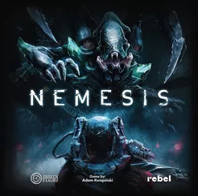
Nemesis è un gioco semi-cooperativo di sopravvivenza spaziale,
in
cui i
giocatori esplorano un'astronave infestata da creature aliene mentre cercano di
completare i
propri obiettivi segreti.
Genere: Sopravvivenza, Horror
Numero di giocatori: 1-5
Tempo di gioco: 90-180 minuti
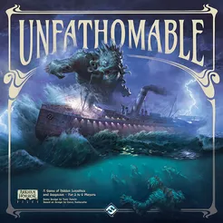
⭐Insondabili è un gioco di deduzione e tradimento ambientato su
una
nave
transatlantica in viaggio, minacciata da mostri marini e traditori segreti tra i
passeggeri.
Genere: Deduzione, Cooperativo
Numero di giocatori: 3-6
Tempo di gioco: 120-180 minuti
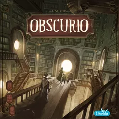
⭐Obscurio è un gioco di deduzione e comunicazione visiva, in
cui
i
giocatori
devono collaborare per fuggire da una biblioteca magica mentre un traditore
cerca di
confonderli.
Genere: Deduzione, Party Game
Numero di giocatori: 2-8
Tempo di gioco: 45 minuti
Console Games
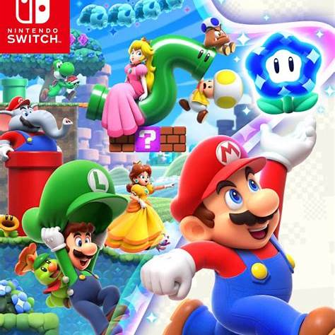
Super Mario Bros. Wonder è una nuova avventura platform 2D che
introduce
trasformazioni sorprendenti e un mondo pieno di effetti speciali e segreti da
scoprire.
Piattaforma: Nintendo Switch
Genere: Platform
Giocatori: 1-4
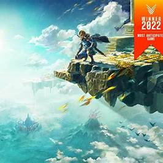
The Legend of Zelda: Tears of the Kingdom è il sequel di Breath
of the
Wild,
con un mondo espanso che include isole nel cielo e nuovi poteri per Link.
Piattaforma: Nintendo Switch
Genere: Avventura, Open World
Giocatori: 1
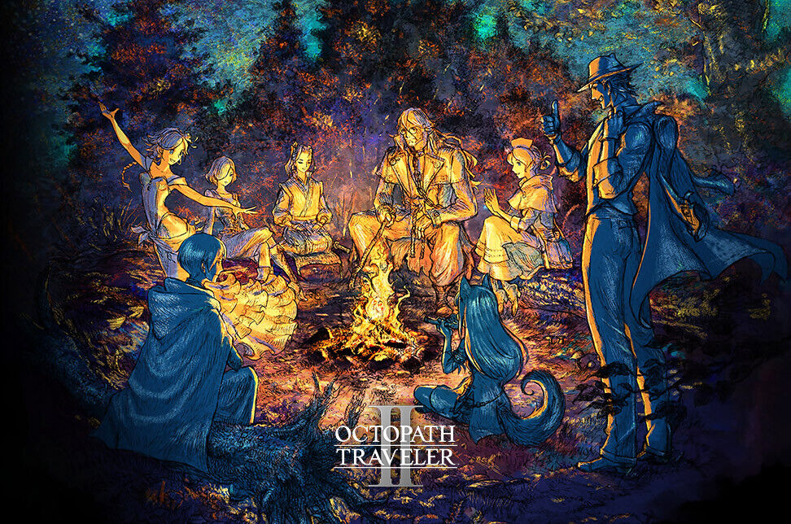
Octopath Traveler 2 è un RPG con un sistema di combattimento
strategico a
turni,
una storia profonda e una grafica in stile HD-2D.
Piattaforma: Nintendo Switch
Genere: RPG, Strategia
Giocatori: 1
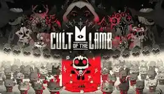
Cult of the Lamb è un rogue-like che mescola azione e gestione,
in cui
il giocatore guida un culto oscuro e affronta nemici sovrannaturali.
Piattaforma: Nintendo Switch
Genere: Rogue-like, Gestione
Giocatori: 1
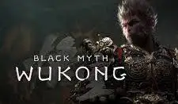
Wu Kong è un action RPG ispirato alla leggenda del Re Scimmia,
con
combattimenti
dinamici e un'ambientazione epica.
Piattaforma: PlayStation
Genere: Action RPG
Giocatori: 1
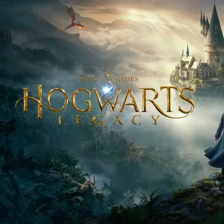
Hogwarts Legacy è un open-world ambientato nell'universo di
Harry Potter,
in cui il giocatore esplora Hogwarts e padroneggia la magia.
Piattaforma: PlayStation
Genere: Open World, Avventura
Giocatori: 1
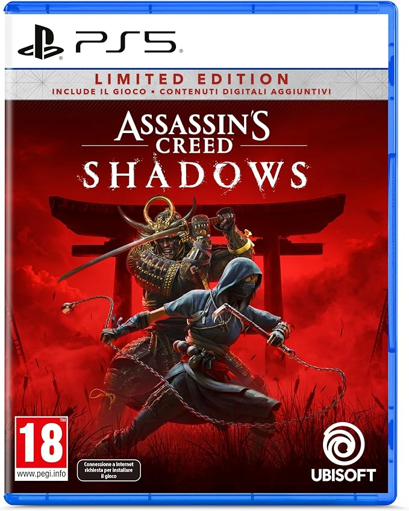
Assassin’s Creed Shadows è il nuovo capitolo della saga,
ambientato nel
Giappone feudale, con meccaniche stealth e combattimenti dinamici.
Piattaforma: PlayStation
Genere: Azione, Open World
Giocatori: 1
Libri e Manga
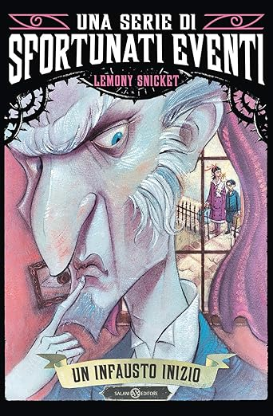
Una serie di sfortunati eventi è una saga di libri che racconta
le
disavventure degli orfani Baudelaire, perseguitati dal malvagio Conte Olaf.
Autore: Amazon
Genere: Narrativa per ragazzi, Mistero
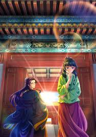
Diari di una speziale è un romanzo storico che segue la vita di
una giovane
speziale in un'epoca in cui la conoscenza delle erbe può essere un'arma o una
salvezza.
Autore: Sarah Penner
Genere: Storico, Mistero
Dr. Stone è un manga che segue la
storia di Senku, un ragazzo
geniale che
cerca di ricostruire la civiltà umana con la scienza
dopo che l’umanità è stata
pietrificata.
Autore: Riichiro Inagaki
Genere: Avventura, Fantascienza